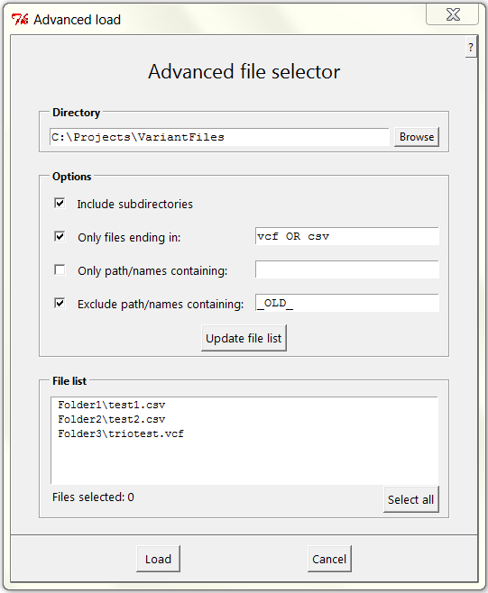
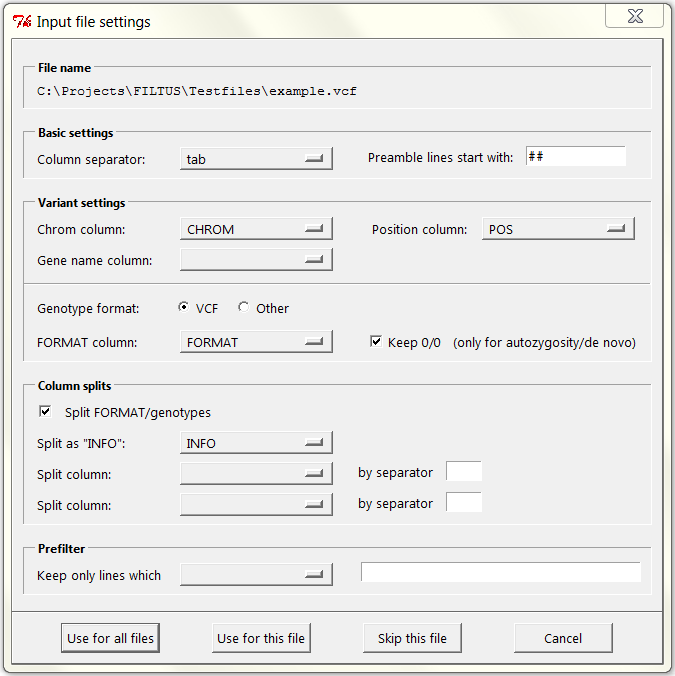

Loading variant files
Description
Prerequisites
Dialogs
Practical tips
Description
This page describes how to load variant files into Filtus. The short story is as follows:
- After opening Filtus, choose Load variant files (either simple or advanced) in the File menu.
- Select the files you want to load.
- When the Input settings dialog opens, make appropriate changes if necessary.
- Press Use for all files or Use for this file.
For more details, continue reading.
Prerequisites
Filtus is very liberal when it comes to file formats. Basically, the only requirements are:
- Each line describes one variant position. (Files with initial meta information are allowed.)
- Columns are separated by either tab, comma, semicolon or space.
- Column headers are included.
- Columns with the following variant information are mandatory:
- Chromosome
- Position
- Gene (optional, but needed for certain analyses)
- Genotype (optional, but needed for certain analyses)
As for the genotype, Filtus understands two alternative formats.
- VCF-like format. This requires a FORMAT column (any column name works) with colon-separated field names, e.g. GT:AD:PL. The remaining columns of the file will then be interpreted as individual samples,
and should have entries corresponding to FORMAT. (For details about this, see the official VCF specification.)
- Non-VCF format. If your file has a column describing if the variant is heterozygous or homozygous, you can use this as the genotype definition.
A typical example would be a column zygosity, with entries het and hom. This format is meaningful only for single-sample variant files where all REF/REF positions are excluded.
Dialogs
Load files (simple)
This opens a standard window for choosing one or several files
in a single folder. You can use usual keyboard tricks, such as
holding down Shift for marking a range of files, and holding down Ctrl
for marking nonadjacent files.
Load files (advanced)
If the variant files are spread across several directories (or
if for some other reason the simple load is cumbersome), the advanced
file loader can be very useful.

In the example shown here, the program locates all files
within directory C:\Projects\VariantFiles
(including subdirectories) whose names end with either vcf
or csv,
and do not contain the string _OLD_.
There are 3 such files, in 3 different subdirectories.
A few tips worth mentioning:
- When modifying the top directory or any of the restriction
fields, pressing <Return> has the same effect
as pushing the Update
filelist
button.
- Simple AND/OR constructions can be used in any of the
restriction fields. This is used in the example entry csv OR vcf above.
Another example could be to require file paths/names to contain e.g. exome AND fullAnnotation.
- Entries starting with REGEX are interpreted as regular
expressions. For example, REGEX test[1-9] would match all files names containing any of the strings
test1, test2, ..., test9.
Filtus is very flexible when it comes to variant file formats, but this requires a certain (small) effort from the user:
Indicating which columns contain the essential variant data: chromosome, position,
gene name and genotype information. Luckily Filtus is quite good at
guessing all of this, and in many cases one can leave everything
unchanged. In particular, files in VCF format are automatically
recognized.

-
Basic settings
-
Choose the correct column separator and preamble indicator (if your file has initial meta information).
Filtus will treat the first line *not* starting with this indicator, as the header line, and all remaining lines as variant lines. For VCF files the preamble indicator is ##.
-
Variant settings
-
Select columns for chromosome, position, gene and genotype. The latter two can be left empty. See Prerequisites for more about the possible genotype formats.
-
Column splits
-
For VCF-like files, the default is to split the genotype columns according to the FORMAT column. This can be overruled by unchecking the Split FORMAT/genotypes.
Splitting the INFO column is not done by default, but will be performed if you indicate the correct column in Split as "INFO". This action will result in the INFO column being replaced by
new columns according to the tags detected in the original column. The new column names are postfixed by "_INFO".
Additional, simple column splits can also be performed. A typical example would be to split the AD field on ',' (comma), which would result in new columns AD1, AD2, ....
-
Prefilter
-
The prefilter option is a powerful way of loading large files, e.g. whole-genome sequencing output with several million variants. If a prefilter is given, it is applied to every line before parsing,
and only those that pass are stored in memory. Simple AND/OR combinations can be used, as in "Keep only lines which - contain - protein_coding AND PASS". Regular expressions can also be used, by starting the
entry with the keyword "REGEX".
-
Use for all files
-
When loading many files, clicking this button signals that the same settings should silently be applied to all files.
-
Use for this file
-
When loading many files, clicking this button signals that the input settings dialog should be prompted again for the next file.
-
Skip this file
-
When loading many files, clicking this button skips to the next file. If there are no other files to be loaded, it is synonymous to Cancel.
-
Cancel
-
Cancel the loading process and return to the main Filtus window.
Practical tips
Tip 1:
For large variant files it is highly recommended to apply a well chosen prefilter - reducing the number of variants to a few hundred thousand at most (depending on the available RAM, and the amount of annotation in the file).
Tip 2:
When loading a single file, Use for all files is synonymous to Use for this file.